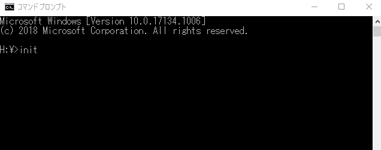

担当教員の指示に従って受講し、終了後は「テスト/アンケート」より、情リテ情報倫理テストを受験してください。
350教室を除いた情報処理教室では自身のアカウントにC言語を実行するためのソフトウェアをインストールします。（350教室ではこの作業は不要です）
以下のファイルをダウンロードし、マイドキュメントに保存してください。
このサイトを参考に、GCCのインストールを行ってください。
もしインストールが上手くできない場合、今日の授業ではIdeoneを使いましょう。MinGWはなるべく次回の授業までにインストールして来てください。インストールできるまではIdeoneを補助的に利用してください。
インストールしたMinGWを実行するためにはパスの設定を行う必要があります。
以下のファイルをダウンロードし、マイドキュメントに保存してください。
次に、コマンドプロンプト（ターミナル）を起動しましょう。
init

以下のソースコードを、適当なエディタを用いて入力してみましょう。すべて半角英数で入力してください。
Hello.c
#include <stdio.h>
void main() {
printf("Hello.\n");
}
ファイル名は、Hello.cとし、マイドキュメントに保存してください。
次に、コマンドプロンプト（ターミナル）を起動しましょう。そして、次のように入力します。
gcc Hello.c
うまくできたら、次は以下のように入力します。
a.exe
うまくいくと、以下のように表示されます。
Hello
コマンドプロンプト・ターミナルの詳しい使い方は以下を参照してください。
参考資料 コマンドプロンプトの使い方
参考資料 ターミナルの使い方
C言語は、作成したソースコードをコンパイルし、バイトコードを作成するコンパイル型言語です。
作成されたバイトコードを実行すると作成したプログラムの結果を確認できます。
ソースコードを入力・保存したあと、次のようなコマンドを実行しました。
gcc Hello.c
この gcc が、コンパイルするためのコマンドです。
これにより、バイトコードの a.exe が作成されます。
コンパイル後、次のコマンドを実行しました。
a.exe
これは、コンパイルで作成されたバイトコード a.exe を実行しています。
さて、先ほど作成した Hello.c を見てみましょう。１行目に #include <stdio.h> と書かれています。
これは、stdio.hという名前のヘッダーファイルを読み込むものです。
詳しくはプログラムに慣れてから説明しますが、ひとまずCプログラムを実行するために必要な命令と考えてください。
少し直感的な説明をすると、Helloなどの文字を表示するために必要なファイルです。
２行目は、void main() となっています。
このmainと書かれた部分がメイン関数と呼ばれる部分です。
プログラムを実行すると、この後の中括弧 { } の中に書かれていることが必ず実行されます。
Cプログラミングでは、このメイン関数が必要です。プログラムの最も大事な部分になります。
３行目は、printf("Hello.\n") となっています。
これは、「ターミナルに文字を出力せよ」という命令です。ですから ./a.exe を実行すると、ターミナルに “Hello.” と表示されます。
よく使うので覚えておきましょう。
\n を除くと（つまり、printf("Hello.\n")をprintf("Hello.") とすると改行をしません。
\n を除いたものも実行してみましょう。
printf("Hello\n") を printf("Hello") に書き換え、動作の違いを確認してみましょう。
また、printf("Hello\n") を参考に、別の文字列を出力させてみましょう。